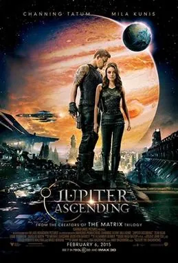

The genetics
Genetics plays an important role in this space opera's worldbuilding. Jupiter's claim to Earth rests on the idea that a person with an identical genetic profile to a dead aristocrat is legally her reincarnation, an extreme form of genetic determinism that equates identity with genome. The universe also includes engineered human–animal hybrids such as Caine, part canine, and Stinger, half human and half honeybee, who serve as soldiers and servants, and an aristocracy that farms entire human populations as raw material for a youth serum. The egg donation scene links this fantasy to real reproductive medicine. There are no geneticists among the main characters; genetic technology is simply an instrument of a decadent elite. In biology, identical twins and clones share a genome but are distinct people with their own memories and personalities.
How genetics is portrayed
- Overall portrayal of genetics
- negative Genetic technology is the instrument of a decadent, murderous aristocracy that treats people as raw material; the heroic splice Caine attracts sympathy as a product, not as a credit to the science.
- Outcome of the genetic intervention
- negative Genetic farming of whole planets for an immortality serum threatens Earth's population, and the engineered splices are treated as expendable soldiers (Stinger's wings are cut off as punishment); the genetic identity rule makes Jupiter a target for murder.
- House of Abrasax (Balem, Kalique, Titus)
- villain Aim: power, commercial (negative). The alien dynasty seeds planets with humanity in order to harvest the population for a youth serum that keeps the elite alive, and its forces produce human-animal splices such as Caine and Stinger as soldiers and servants. Balem is the main antagonist and dies in his refinery, and his siblings try to use or kill Jupiter.
The story
Jupiter Jones, a Russian immigrant who cleans houses in Chicago, agrees to sell her eggs to buy a telescope. At the clinic, the staff turn out to be alien "Keepers" sent to kill her, but she is rescued by Caine Wise, a genetically engineered former soldier, half human and half canine. She learns that Earth and countless other planets were seeded by an alien dynasty, the House of Abrasax, to harvest their populations for a youth serum that gives the elite near-eternal life. Jupiter is genetically identical to the dynasty's dead matriarch and is therefore legally her reincarnation and the owner of Earth, which makes her a threat to the matriarch's heirs, Balem, Kalique and Titus, who each try to use or eliminate her. After escaping Titus's plan to marry and kill her, Jupiter refuses to cede Earth to Balem, who dies in the destruction of his refinery on Jupiter. She returns home, secretly retaining ownership of the planet.